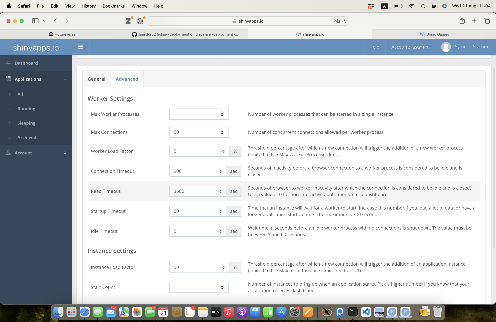

Solutions institutionnelles de déploiement d’applications shiny avec kubernetes
1 Motivation
- besoin de déploiement d’appli shiny pour utilisation sans programmation
- solution proposée par shinyapps.io: limitation à 25h/mois et 5 applications concurrentes pour la version gratuite, et 1Gb de RAM. Les étapes du déploiement sont illustrées dans la Section 1.6
- solution proposée par Posit (anciennement par Shiny Server Pro): PositConnect: payant (cher)
- intérêt d’avoir une solution institutionnelle
1.1 Outils institutionnels existants
| Outil | Institution | Références |
|---|---|---|
| plmshift | CNRS | |
| SK8 | INRAE | Maigné et al. (2023) |
| Shiny-K8s | Institut Pasteur | Brancotte and Chapeaublanc (2024) |
1.2 Préparation de l’appli au déploiement
Ces trois outils sont dédiés au déploiement d’applications shiny via Kubernetes (aka K8s). Le développeur de l’application shiny doit fournir un dépôt git contenant le code source de l’application et spécifier les dépendances (via un fichier csv dédié pour shiny-K8s et plmshift, ou automatiquement via renv pour SK8).

1.3 Configuration du serveur shiny
C’est ici que les trois solutions se différencient:
- Pour plmshift, on demande également au développeur de l’application de configurer et d’administrer lui-même son instance ShinyServer, via l’interface d’OpenShift. Ces étapes sont documentées ici
- Idem pour Shiny-K8s, avec (semble-t-il) moins de compétences techniques requises. Ces étapes sont documentées ici
- SK8 propose une interface simplifiée pour la configuration du serveur shiny, qui permet au développeur de l’application shiny spécifier directement les paramètres (RAM, CPU) sans avoir besoin de compétences en déploiement.
1.4 Accessibilité ?
plmshift, SK8 et Shiny-K8s sont respectivement accessibles seulement pour des projets développés par le CNRS, INRAE et l’Institut Pasteur.
Aujourd’hui, SK8 semble la solution la plus simple d’utilisation pour le développeur shiny. Les paramètres de configuration sont relativement proches de ceux demandés pour le dépoiements sur shinyapps.io (voir Section 1.6). Afin de rendre ce type d’outil accessible à d’autres institutions qu’’INRAE, on peut envisager soit l’ouverture d’un des services existants à ces institutions, soit la mise à disposition de ce type de service directement par chaque institution. Les deux solutions nécessitent des ressources matérielles et humaines; la première solution peut permettre des économies d’échelle mais peut poser des questions sur le partage des données de recherche entre institutions.
1.5 Autres ressources
- code d’une application démo pour déploiement avec shiny-K8s
- présentation d’Elise Maigné aux rencontres R 2024
1.6 Etapes du déploiement d’une application shiny via shinyapps.io

1.7 Idées d’amelioration de la solution PLMShift
La procédure de déploiement consiste à:
Préparer le code de l’application shiny dans un repository git selon un template fourni par PLMShift;
Créer une instance ShinyR à partir de l’interface OpenShift en:
- Renseignant l’adresse du repository git;
- Configurant des secrets pour l’authentification (communication GitHub - OpenShift);
- Configurant des variables d’environnement pour l’application (nom de l’application, ressources nécessaires etc.);
- Configurant des paramètres de déploiement (nombre de réplicas, stratégie de déploiement etc.);
- Configurant des paramètres de monitoring (alertes, logs etc.).
Tester l’application déployée.
Les étapes 2 et 3 sont réalisées par le développeur de l’application. L’interface OpenShift est complexe et nécessite des compétences techniques. Il serait intéressant de simplifier cette interface pour la rendre plus accessible aux utilisateurs non-experts. Par exemple, en proposant une interface graphique pour la configuration des secrets, des variables d’environnement, des paramètres de déploiement et de monitoring.